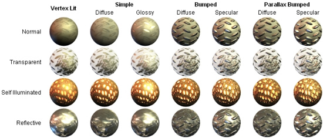

Materials and Shaders
There is a close relationship between Materials and Shaders in Unity. Shaders contain code that defines what kind of properties and assets to use. Materials allow you to adjust properties and assign assets.

A Shader is implemented through a Material
To create a new Material, use from the main menu or the Project View context menu. Once the Material has been created, you can apply it to an object and tweak all of its properties in the Inspector. To apply it to an object, just drag it from the Project View to any object in the Scene or Hierarchy.
Setting Material Properties
You can select which Shader you want any particular Material to use. Simply expand the drop-down in the Inspector, and choose your new Shader. The Shader you choose will dictate the available properties to change. The properties can be colors, sliders, textures, numbers, or vectors. If you have applied the Material to an active object in the Scene, you will see your property changes applied to the object in real-time.
There are two ways to apply a Texture to a property.
- Drag it from the Project View on top of the Texture square
- Click the button, and choose the texture from the drop-down list that appears
Two placement options are available for each Texture:
| Tiling | Scales the texture along the different. |
| Offset | Slides the texture around. |
Built-in Shaders
A set of built-in Shaders are installed with the Unity editor. Over eighty shaders are available - the main ones used for texturing game objects fall into the following categories:-
- Normal: For opaque textured objects.
- Transparent: For partly transparent objects. The texture's alpha channel defines the level of transparency.
- TransparentCutOut: For objects that have only fully opaque and fully transparent areas, like fences.
- Self-Illuminated: For objects that have light emitting parts.
- Reflective: For opaque textured objects that reflect an environment Cubemap.
In each group, built-in shaders range by complexity, from the simple VertexLit to the complex Parallax Bumped with Specular. For more information about performance of Shaders, please read the built-in Shader performance page

In addition to the main game object shaders, there are a number of other categories for specialised purposes:-
- FX: lighting and water effects.
- GUI: graphic user interface display.
- Nature: trees and terrain.
- Particles: particle system effects.
- Render FX: skybox shaders.
- Toon: cartoon-style rendering.
Also, some of these shaders have special versions for use with mobile devices.
Shader technical details
Unity has an extensive Shader system, allowing you to tweak the look of all in-game graphics. It works like this:
A Shader basically defines a formula for how the in-game shading should look. Within any given Shader is a number of properties (typically textures). Shaders are implemented through Materials, which are attached directly to individual GameObjects. Within a Material, you will choose a Shader, then define the properties (usually textures and colors, but properties can vary) that are used by the Shader.
This is rather complex, so let's look at a workflow diagram:

On the left side of the graph is the Carbody Shader. 2 different Materials are created from this: Blue car Material and Red car Material. Each of these Materials have 2 textures assigned; the Car Texture defines the main texture of the car, and a Color FX texture. These properties are used by the shader to make the car finish look like 2-tone paint. This can be seen on the front of the red car: it is yellow where it faces the camera and then fades towards purple as the angle increases. The car materials are attached to the 2 cars. The car wheels, lights and windows don't have the color change effect, and must hence use a different Material. At the bottom of the graph there is a Simple Metal Shader. The Wheel Material is using this Shader. Note that even though the same Car Texture is reused here, the end result is quite different from the car body, as the Shader used in the Material is different.
To be more specific, a Shader defines:
- The method to render an object. This includes using different methods depending on the graphics card of the end user.
- Any vertex and fragment programs used to render.
- Some texture properties that are assignable within Materials.
- Color and number settings that are assignable within Materials.
A Material defines:
- Which textures to use for rendering.
- Which colors to use for rendering.
- Any other assets, such as a Cubemap that is required by the shader for rendering.
Shaders are meant to be written by graphics programmers. They are created using the ShaderLab language, which is quite simple. However, getting a shader to work well on a variety graphics cards is an involved job and requires a fairly comprehensive knowledge of how graphics cards work.
A number of shaders are built into Unity directly, and some more come in the Standard Assets Library. For further information about shaders, see the Built-in Shader Guide.
Page last updated: 2012-12-20